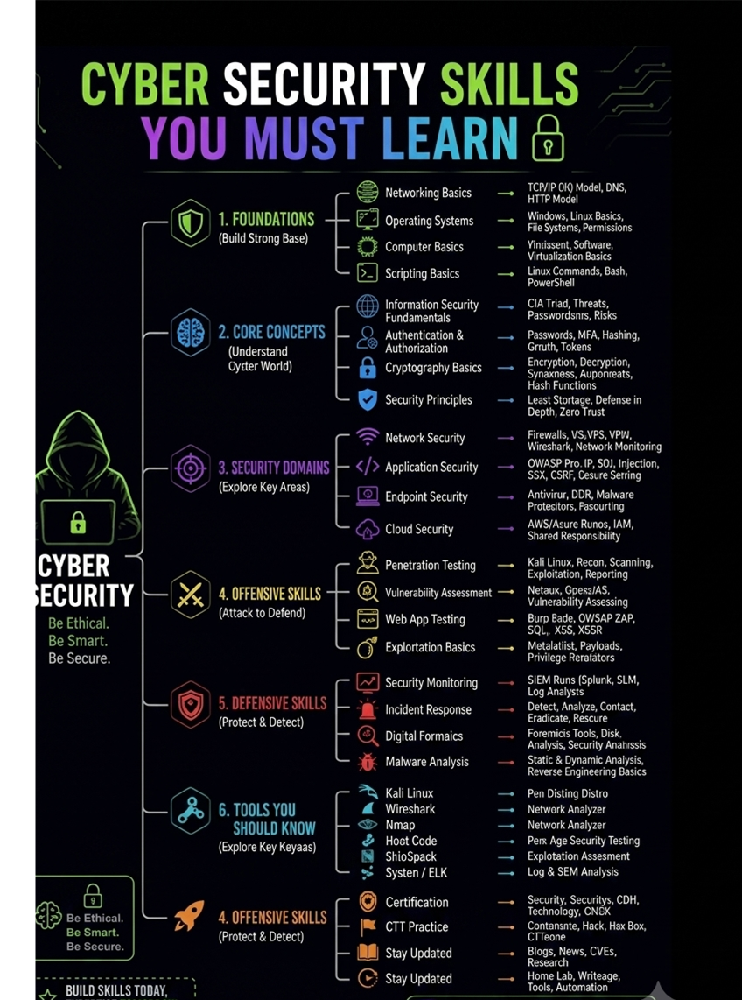
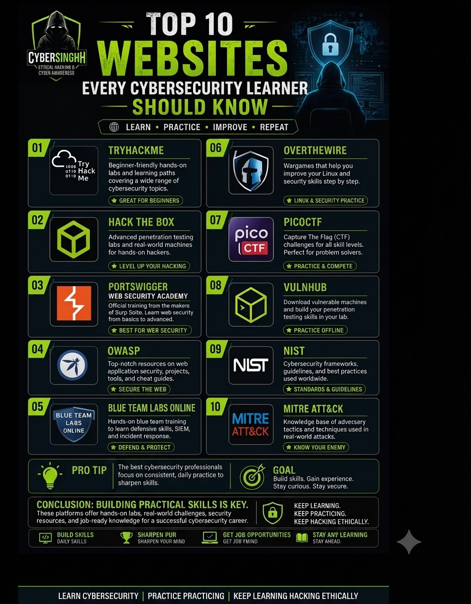
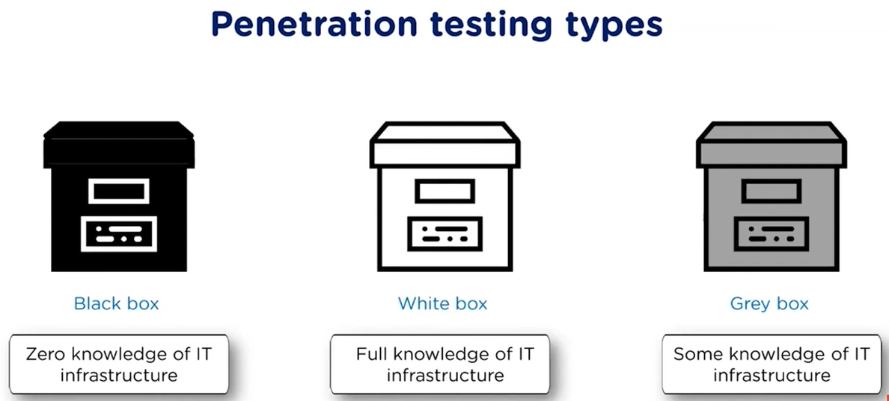
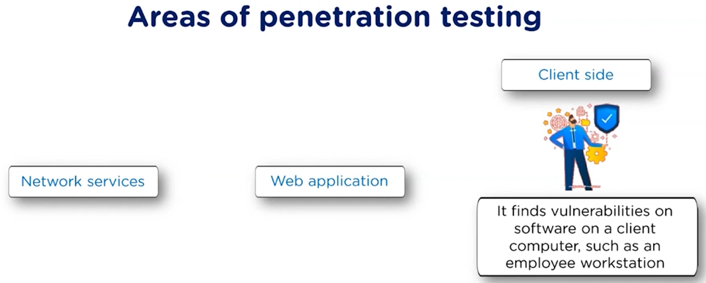
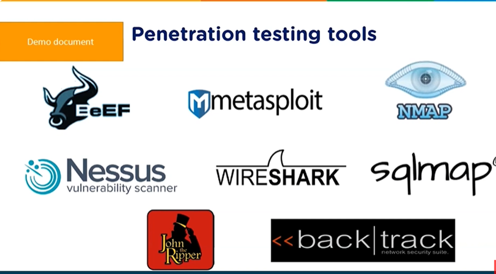
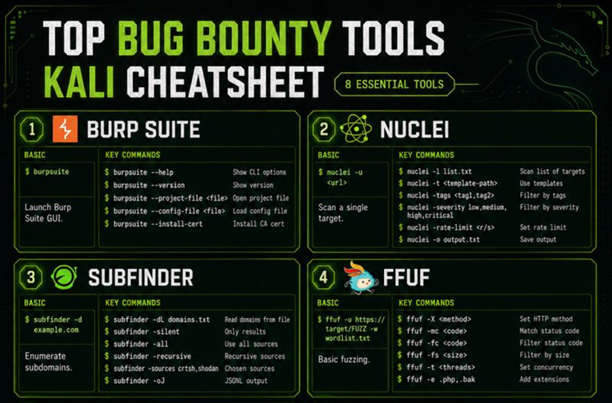
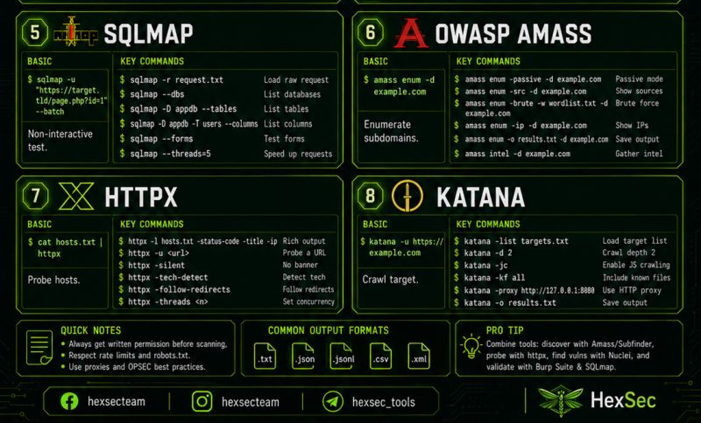

Cybersecurity Roadmap
Essential resources, platforms, and foundational knowledge to guide your journey from beginner to advanced cybersecurity professional.
Cyber Security Skills You Must Learn
Cyber Security: Be Ethical. Be Smart. Be Secure.
Motto: Build Skills Today, Secure Tomorrow

1. Foundations (Build Strong Base)
- Networking Basics: TCP/IP Model, DNS, HTTP Model
- Operating Systems: Windows, Linux Basics, File Systems, Permissions
- Computer Basics: Hardware, Software, Virtualization Basics
- Scripting Basics: Linux Commands, Bash, PowerShell
2. Core Concepts (Understand Cyber World)
- Information Security Fundamentals: CIA Triad, Threats, Passwords, Risks
- Authentication & Authorization: Passwords, MFA, Hashing, OAuth, Tokens
- Cryptography Basics: Encryption, Decryption, Symmetric, Asymmetric, Hash Functions
- Security Principles: Least Privilege, Defense in Depth, Zero Trust
3. Security Domains (Explore Key Areas)
- Network Security: Firewalls, IDS/IPS, VPN, Wireshark, Network Monitoring
- Application Security: OWASP Top 10, SQL Injection, XSS, CSRF, Secure Coding
- Endpoint Security: Antivirus, EDR, Malware Protection, Patching
- Cloud Security: AWS/Azure Basics, IAM, Shared Responsibility
4. Offensive Skills (Attack to Defend)
- Penetration Testing: Kali Linux, Recon, Scanning, Exploitation, Reporting
- Vulnerability Assessment: Nmap, Nessus, Vulnerability Scanning
- Web App Testing: Burp Suite, OWASP ZAP, SQLi, XSS, SSRF
- Exploitation Basics: Metasploit, Payloads, Privilege Escalation
5. Defensive Skills (Protect & Detect)
- Security Monitoring: SIEM Tools (Splunk, ELK), Log Analysis
- Incident Response: Detect, Analyze, Contain, Eradicate, Recover
- Digital Forensics: Forensics Tools, Disk Analysis, Memory Analysis
- Malware Analysis: Static & Dynamic Analysis, Reverse Engineering Basics
6. Tools You Should Know
- Kali Linux: Pen Testing Distro
- Wireshark: Network Analyzer
- Nmap: Network Scanner
- Burp Suite: Web Security Testing
- Metasploit: Exploitation Framework
- Splunk / ELK: Log & SIEM Analysis
7. Continuous Learning & Practice
- Certifications: Security+, CEH, EJPT, OSCP
- CTF Practice: TryHackMe, Hack The Box, CTFtime
- Stay Updated: Blogs, News, CVEs, Research
- Hands-on Practice: Home Lab, Writeups, Tools, Automation
Top 10 Websites Every Cybersecurity Learner Should Know
Motto: Learn • Practice • Improve • Repeat

| # | Website | Description | Key Tag |
|---|---|---|---|
| 01 | TryHackMe | Beginner-friendly hands-on labs and learning paths covering a wide range of cybersecurity topics. | Great for Beginners |
| 02 | Hack The Box | Advanced penetration testing labs and real-world machines for hands-on hackers. | Level Up Your Hacking |
| 03 | PortSwigger Web Security Academy | Official training from the makers of Burp Suite. Learn web security from basics to advanced. | Best for Web Security |
| 04 | OWASP | Top-notch resources on web application security, projects, tools, and cheat guides. | Secure the Web |
| 05 | Blue Team Labs Online | Hands-on blue team training to learn defensive skills, SIEM, and incident response. | Defend & Protect |
| 06 | OverTheWire | Wargames that help you improve your Linux and security skills step by step. | Linux & Security Practice |
| 07 | PicoCTF | Capture The Flag (CTF) challenges for all skill levels. Perfect for problem solvers. | Practice & Compete |
| 08 | VulnHub | Download vulnerable machines and build your penetration testing skills in your lab. | Practice Offline |
| 09 | NIST | Cybersecurity frameworks, guidelines, and best practices used worldwide. | Standards & Guidelines |
| 10 | MITRE ATT&CK | Knowledge base of adversary tactics and techniques used in real-world attacks. | Know Your Enemy |
Conclusion
Pro Tip: The best cybersecurity professionals focus on consistent, daily practice to sharpen skills.
Goal: Build skills. Gain experience. Stay curious. Stay secure.
Building practical skills is key. These platforms offer hands-on labs, real-world challenges, security resources, and job-ready knowledge for a successful cybersecurity career.
Penetration Testing Concepts
Penetration testing (or ethical hacking) involves simulating cyberattacks against your own systems to identify weaknesses before malicious actors can exploit them.
Penetration Testing Types

- Black Box: Zero knowledge of IT infrastructure
- White Box: Full knowledge of IT infrastructure
- Grey Box: Some knowledge of IT infrastructure
Areas of Penetration Testing

- Network Services
- Web Application
- Client Side: Finds vulnerabilities on software on a client computer, such as an employee workstation.
Penetration Testing Tools

- BeEF
- Metasploit
- Nmap
- Nessus Vulnerability Scanner
- Wireshark
- sqlmap
- John the Ripper
- BackTrack Network Security Suite
Top Bug Bounty Tools Kali Cheatsheet
A quick reference guide for the 8 essential tools used in bug bounty hunting and web application penetration testing.


1. BURP SUITE
Basic: $ burpsuite — Launch Burp Suite GUI.
Key Commands:
$ burpsuite --help
$ burpsuite --version
$ burpsuite --project-file
$ burpsuite --config-file
$ burpsuite --install-cert 2. NUCLEI
Basic: $ nuclei -u
Key Commands:
$ nuclei -l list.txt
$ nuclei -t
$ nuclei -tags
$ nuclei -severity low,medium,high,critical
$ nuclei -rate-limit
$ nuclei -o output.txt 3. SUBFINDER
Basic: $ subfinder -d example.com — Enumerate subdomains.
Key Commands:
$ subfinder -dL domains.txt
$ subfinder -silent
$ subfinder -all
$ subfinder -recursive
$ subfinder -sources crtsh,shodan
$ subfinder -oJ4. FFUF
Basic: $ ffuf -u https://target/FUZZ -w wordlist.txt — Basic fuzzing.
Key Commands:
$ ffuf -X
$ ffuf -mc
$ ffuf -fc
$ ffuf -fs
$ ffuf -t
$ ffuf -e .php,.bak 5. SQLMAP
Basic: $ sqlmap -u "https://target.tld/page.php?id=1" --batch — Non-interactive test.
Key Commands:
$ sqlmap -r request.txt
$ sqlmap --dbs
$ sqlmap -D appdb --tables
$ sqlmap -D appdb -T users --columns
$ sqlmap --forms
$ sqlmap --threads=56. OWASP AMASS
Basic: $ amass enum -d example.com — Enumerate subdomains.
Key Commands:
$ amass enum -passive -d example.com
$ amass enum -src -d example.com
$ amass enum -brute -w wordlist.txt -d example.com
$ amass enum -ip -d example.com
$ amass enum -o results.txt -d example.com
$ amass intel -d example.com7. HTTPX
Basic: $ cat hosts.txt | httpx — Probe hosts.
Key Commands:
$ httpx -l hosts.txt -status-code -title -ip
$ httpx -u
$ httpx -silent
$ httpx -tech-detect
$ httpx -follow-redirects
$ httpx -threads 8. KATANA
Basic: $ katana -u https://example.com — Crawl target.
Key Commands:
$ katana -list targets.txt
$ katana -d 2
$ katana -jc
$ katana -kf all
$ katana -proxy http://127.0.0.1:8080
$ katana -o results.txtAdditional Notes & Info
Quick Notes:
- Always get written permission before scanning.
- Respect rate limits and
robots.txt. - Use proxies and OPSEC best practices.
Common Output Formats: .txt, .json, .jsonl, .csv, .xml
Pro Tip: Combine tools: discover with Amass/Subfinder, probe with httpx, find vulns with Nuclei, and validate with Burp Suite & SQLmap.
20 Essential SOC Tools for Every SOC Analyst
Security Operations Center (SOC) analysts rely on a variety of tools to monitor networks, detect threats, and respond to incidents. The following table outlines the top 20 tools categorized by their function, such as SIEM, EDR, and Network Security Monitoring.
| # | Tool Name | Type / Category | Main Function | Example Usage |
|---|---|---|---|---|
| 1 | Splunk Enterprise Security | SIEM | Collect and analyze logs, detect threats, and generate alerts and reports. | Log Analysis, Attack Detection, Dashboards |
| 2 | Microsoft Sentinel | SIEM (Cloud) | Cloud-based SIEM from Microsoft for collecting and analyzing data and threats. | Log Analysis, Azure Integration, Incident Management |
| 3 | IBM QRadar | SIEM | Network and device monitoring, along with security event analysis. | Threat Detection, Behavioral Analysis, Compliance & Reporting |
| 4 | Elastic Security (ELK Stack) | SIEM / Log Management | Collect, analyze, and display logs in a flexible and customizable manner. | Log Searching, Dashboard Creation, Threat Detection |
| 5 | Microsoft Defender for Endpoint | EDR | Protect endpoint devices from malware and detect suspicious behavior. | Endpoint Monitoring, Threat Analysis, Incident Response |
| 6 | CrowdStrike Falcon | EDR / XDR | Advanced platform for endpoint protection, attack detection, and response. | Threat Hunting, Attack Detection, Real-time Response |
| 7 | SentinelOne | EDR / XDR | Comprehensive endpoint protection featuring AI-powered behavioral analysis. | Attack Prevention, Behavioral Analysis, Automated Response |
| 8 | Snort | IDS | Intrusion detection system based on packet analysis and rule matching. | Network Monitoring, Attack Detection, Real-time Alerts |
| 9 | Suricata | IPS / IDS | Open-source system for intrusion detection/prevention and network traffic analysis. | Attack Prevention, Protocol Analysis, Threat Discovery |
| 10 | Zeek (Bro) | Network Security Monitor | Network monitoring, connection analysis, and detection of anomalous activity. | Protocol Analysis, Threat Discovery, Detailed Log Generation |
| 11 | Wazuh | SIEM / XDR (Open Source) | Endpoint monitoring, log collection, threat detection, vulnerability scanning, and FIM. | Endpoint Protection, Threat Discovery, Security Compliance |
| 12 | TheHive | Incident Response | Security incident management platform for organizing investigations and tasks. | Case Management, Task Assignment, Investigation Tracking |
| 13 | Cortex | Security Orchestration | Automated analysis of files, IP addresses, and domains to feed information into TheHive. | Automated Analysis, Reduced Investigation Time, Response Support |
| 14 | MISP | Threat Intelligence | Sharing indicators of compromise (IOCs) and threat intelligence data. | Threat Sharing, Information Enrichment, New Attack Detection |
| 15 | Nessus | Vulnerability Scanner | Scanning for security vulnerabilities across systems, networks, and applications. | Vulnerability Assessment, Risk Reporting, Vulnerability Management |
| 16 | Wireshark | Packet Analyzer | Packet-level network traffic analysis and detailed protocol dissection. | Troubleshooting, Traffic Analysis, Suspicious Activity Detection |
| 17 | VirusTotal | Malware Analysis | Analyzing files and URLs using multiple antivirus engines. | File Analysis, URL Scanning, Malware Detection |
| 18 | YARA | Malware Analysis | Creating rules to identify malware and specific patterns within files. | Malware Analysis, Pattern Searching, File Classification |
| 19 | OSQuery | Endpoint Monitoring | Using SQL queries to fetch data regarding system status, processes, and connections. | Information Gathering, Investigations, Endpoint Monitoring |
| 20 | Security Onion | NSM / Security Platform | Integrated platform for network security monitoring and data analysis (Zeek + ELK + Suricata). | Network Monitoring, Threat Analysis, Alerting & Reporting |
Types of Malware
Definition: Malware stands for MALicious softWARE. These threats can harm systems, steal data, or disrupt operations.
- Virus: Attaches to clean files and spreads when the infected file is executed. It requires user action to spread. (Examples: Melissa, CIH)
- Worm: Self-replicates and spreads across networks without any user interaction. (Examples: Conficker, Stuxnet)
- Trojan Horse: Disguised as a legitimate program, but performs malicious activities once executed. (Examples: Zeus, Emotet)
- Ransomware: Locks or encrypts your files and demands payment (ransom) to restore access. (Examples: WannaCry, Ryuk)
- Spyware: Secretly monitors user activity and collects information without your knowledge. (Examples: CoolWebSearch, FinFisher)
- Rootkit: Hides malware and provides stealthy, controlling access to a system. (Examples: TDSS, ZeroAccess)
- Keylogger: Records every keystroke made by a user to steal sensitive information. (Examples: Ardamax Keylogger, Elite Keylogger)
- Botnet: Turns infected devices into 'bots' controlled remotely by attackers to perform malicious tasks. (Examples: Mirai, Zeus Botnet)
How to Protect Yourself
- Keep software updated
- Use trusted antivirus and firewall
- Avoid suspicious emails and attachments
- Download only from official sources
- Use strong passwords and MFA
- Take regular backups
Cybersecurity Terms Explained Simply
A quick glossary of modern cybersecurity concepts, threats, and defense mechanisms.
Zero Trust
A security model that continuously verifies users, devices, and access requests.
Machine Identity
Managing certificates, keys, tokens, and non-human credentials across systems and workloads.
Open XDR
A connected detection and response approach that links signals across security tools.
Identity Security
Protecting user accounts, access paths, and authentication across the enterprise.
Exposure Management
Finding, prioritizing, and reducing exploitable weaknesses across the attack surface.
Agentic AI Risk
Managing risks created by autonomous AI agents acting with tools, data, and permissions.
Privileged Access Management
Controlling high-risk administrative access for users, systems, and sensitive environments.
Threat Intelligence
Collected context about adversaries, tactics, and threats used to improve defense.
Deepfake Fraud
Using synthetic voice, video, or images to deceive people and trigger harmful actions.
Attack Surface Management
Monitoring internet-facing assets and shadow exposure that attackers can discover.
SIEM
Collecting and analyzing security logs to detect suspicious activity and support investigations.
Ransomware
Malware that encrypts or steals data to demand payment or extortion.
Threat Hunting
Proactively searching for hidden attacker activity that automated tools may miss.
SOAR
Automating security workflows, response actions, and investigation steps across platforms.
Phishing-Resistant MFA
Authentication methods designed to block credential theft and replay-based attacks.
Cloud Security
Protecting cloud workloads, identities, configurations, data, and service connections.
CSPM
Checking cloud environments for misconfigurations, policy violations, and risky settings.
Third-Party Cyber Risk
Managing security exposure created by vendors, partners, and service providers.
CNAPP
A cloud-native protection approach covering workload, identity, posture, and runtime risk.
DSPM
Discovering and protecting sensitive data across cloud, SaaS, and data repositories.
Data Loss Prevention
Reducing the risk of sensitive data being exposed, moved, or misused.
DevSecOps
Embedding security checks and controls throughout software development and delivery.
SBOM
A software ingredients list that improves visibility into components and supply chain risk.
Post-Quantum Readiness
Preparing systems and cryptography for the future impact of quantum computing.
AI Governance
Setting rules, oversight, and accountability for safe and responsible AI use.
Prompt Injection
Manipulating AI systems through crafted inputs that alter behavior or expose data.
Operational Resilience
Maintaining critical services during cyber disruption and recovering with minimal impact.
Incident Response
The coordinated process for detecting, containing, investigating, and recovering from attacks.
Cyber Recovery
Restoring critical systems and trusted data after destructive or widespread cyber events.
Secure by Design
Building products and systems with security considered from the start, not added later.